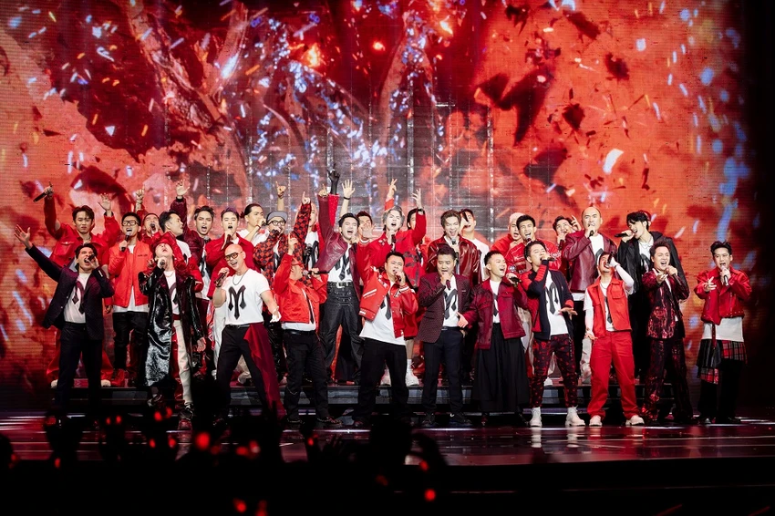
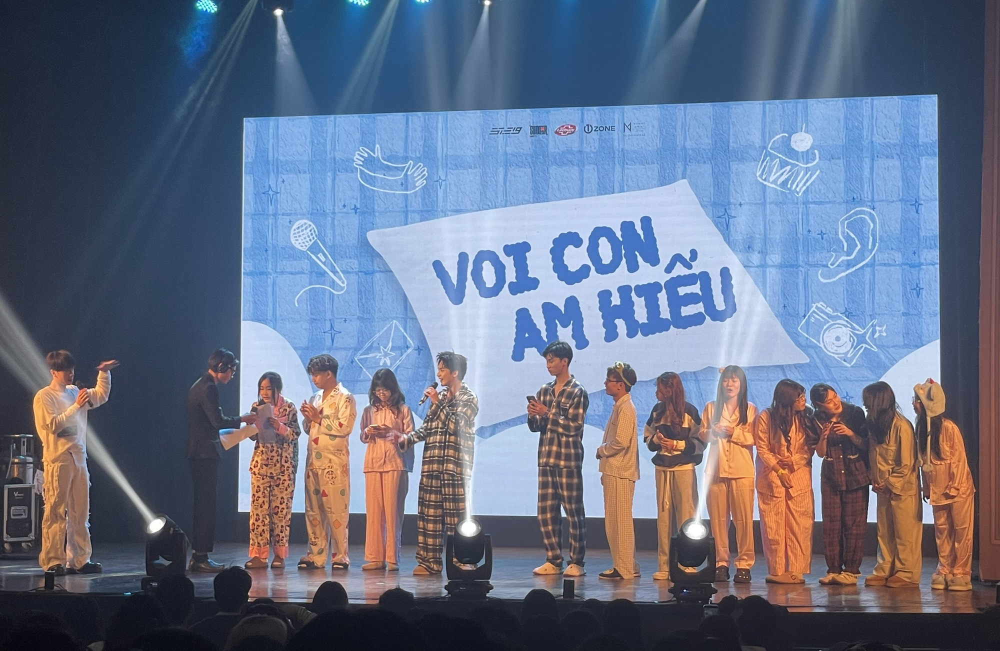
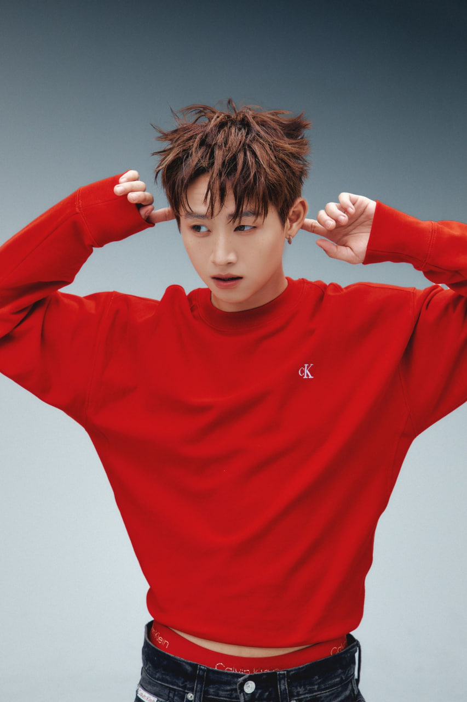

Khi show thực tế trở thành bệ phóng mới cho nhiều ca sĩ Việt
Từ những sân khấu truyền hình rực sáng, nhiều cái tên từng đứng ở vùng “nửa quen nửa lạ” của V-pop bỗng bước ra trung tâm sự chú ý. Show thực tế âm nhạc không còn chỉ là nơi giải trí cuối tuần, mà đang trở thành một cỗ máy truyền thông mới, nơi ca sĩ được nhìn thấy, được bàn luận và được tái định vị trong lòng công chúng.
Bán cả hành trình
Đêm ghi hình khép lại, nhưng trên mạng xã hội, cuộc chơi chỉ vừa bắt đầu. Một đoạn cắt sân khấu dài chưa đầy một phút được chia sẻ lại hàng nghìn lần. Một câu hát trở thành âm thanh nền cho video TikTok. Một biểu cảm hậu trường được người hâm mộ chụp màn hình, chế ảnh, bình luận và lan truyền. Ở thời điểm ấy, show thực tế không còn nằm gọn trong khung giờ phát sóng. Nó sống tiếp trên điện thoại, trong các hội nhóm, ở quán cà phê, trên dòng trạng thái và trong những cuộc trò chuyện sau giờ làm.

Vài năm trước, để một ca sĩ trẻ tạo dấu ấn, họ thường cần một bản hit đủ mạnh, một chiến dịch quảng bá đủ dài hoặc một scandal đủ lớn để chen vào dòng chảy giải trí vốn thay đổi từng ngày. Nhưng hiện nay, show thực tế âm nhạc đang mở ra một con đường khác. Ở đó, nghệ sĩ không chỉ hát. Họ tập luyện, tranh luận, thất bại, bật khóc, đứng dậy, tương tác với đồng đội và bộc lộ những lát cắt đời thường mà sân khấu ca nhạc thông thường ít khi cho khán giả thấy.
Chính sự “được nhìn thấy nhiều lớp” ấy khiến công chúng có thêm lý do để yêu thích một nghệ sĩ. Một người trước đây chỉ được nhớ đến qua vài ca khúc nay có thể được khán giả nhận ra qua tính cách, tinh thần làm việc, sự hài hước hoặc khả năng dẫn dắt đội nhóm. Một giọng ca từng bị đóng khung trong hình ảnh cũ có cơ hội làm mới mình bằng một phần trình diễn khác biệt. Một nghệ sĩ lâu năm cũng có thể tìm lại sức nóng khi xuất hiện trong bối cảnh cạnh tranh, gần gũi và giàu cảm xúc hơn.
Điểm đặc biệt của các show thực tế âm nhạc nằm ở việc chúng không chỉ bán một tiết mục, mà bán cả hành trình. Khán giả không chỉ chờ xem ai hát hay nhất, nhảy tốt nhất hay chiến thắng cuối cùng. Họ theo dõi quá trình một sân khấu được tạo ra: từ lúc chọn bài, chia đoạn, tập vũ đạo, xử lý mâu thuẫn, vượt áp lực cho đến giây phút bước ra trước ánh đèn. Mỗi tập phát sóng vì thế giống như một chương truyện, còn mỗi nghệ sĩ là một nhân vật có tuyến phát triển riêng.
Nhà máy sản xuất khoảnh khắc
Với các ca sĩ trẻ, đây là cơ hội hiếm có. Trong một thị trường âm nhạc đông đúc, việc có mặt đều đặn trên một chương trình lớn giúp họ tiết kiệm rất nhiều thời gian xây dựng nhận diện. Thay vì phải tự mình kéo khán giả đến từng sản phẩm riêng lẻ, họ xuất hiện trong một hệ sinh thái đã có sẵn người xem, truyền thông, nhà tài trợ, cộng đồng fan và các nền tảng phân phối nội dung. Nếu biết tận dụng, chỉ một sân khấu nổi bật cũng có thể kéo theo lượng người theo dõi mới, lời mời biểu diễn, hợp đồng quảng cáo và cơ hội hợp tác âm nhạc.

Với những nghệ sĩ đã có tên tuổi, show thực tế lại đóng vai trò như một cuộc tái xuất. Không ít ca sĩ từng có giai đoạn chững lại vì thị hiếu thay đổi, sản phẩm mới chưa tạo tiếng vang hoặc hình ảnh cá nhân chưa đủ mới mẻ. Khi tham gia một chương trình thực tế, họ có cơ hội bước ra khỏi vùng an toàn. Khán giả được nhìn thấy họ trong những thử thách mới: hát thể loại khác, nhảy nhiều hơn, làm việc nhóm, đối thoại với thế hệ nghệ sĩ trẻ hơn. Sự va chạm đó đôi khi tạo ra một phiên bản nghệ sĩ mới mẻ hơn so với hình ảnh quen thuộc trước đây.
Ở góc độ truyền thông, show thực tế là một “nhà máy sản xuất khoảnh khắc”. Mỗi tập phát sóng có thể tạo ra hàng loạt chất liệu: sân khấu trình diễn, clip hậu trường, câu nói viral, hình ảnh thời trang, phản ứng của ban cố vấn, tương tác giữa các nghệ sĩ và cảm xúc của khán giả. Những chất liệu này được cắt nhỏ, tái biên tập và phân phối trên nhiều nền tảng khác nhau. Một tiết mục không chỉ tồn tại trên truyền hình, mà còn được tái sinh thành video ngắn, ảnh meme, bài phân tích, reaction, fancam và bình luận cộng đồng.
Sự thay đổi này cũng cho thấy thói quen thưởng thức âm nhạc của khán giả Việt đang dịch chuyển. Người xem không chỉ nghe bài hát, họ muốn biết câu chuyện phía sau bài hát. Họ không chỉ quan tâm nghệ sĩ hát gì, mà còn chú ý người đó là ai, làm việc thế nào, cư xử ra sao và có đáng để đồng hành lâu dài hay không. Trong bối cảnh ấy, một show thực tế thành công có thể biến sự tò mò ban đầu thành tình cảm, rồi từ tình cảm thành cộng đồng người hâm mộ.
Khởi đầu mới, không phải đích đến
Tuy nhiên, bệ phóng nào cũng đi kèm sức ép. Khi nghệ sĩ nổi lên quá nhanh từ show thực tế, câu hỏi tiếp theo luôn là: sau chương trình, họ sẽ làm gì? Sự chú ý của công chúng có thể đến rất nhanh, nhưng cũng rời đi rất nhanh nếu nghệ sĩ không có sản phẩm đủ tốt để giữ chân khán giả. Một sân khấu viral có thể tạo cú hích, nhưng không thể thay thế hoàn toàn cho năng lực âm nhạc, chiến lược hình ảnh và sự bền bỉ trong nghề.

Đó là lý do show thực tế nên được nhìn như điểm khởi đầu mới, không phải đích đến. Nó có thể giúp một ca sĩ được chú ý, nhưng chính sản phẩm âm nhạc sau đó mới quyết định họ có ở lại được trong thị trường hay không. Người thắng lớn không nhất thiết là người giành thứ hạng cao nhất, mà là người biết chuyển hóa sự chú ý thành sự nghiệp: ra mắt ca khúc đúng thời điểm, xây dựng màu sắc cá nhân rõ ràng, giữ kết nối với người hâm mộ và chứng minh rằng ánh hào quang trên truyền hình không chỉ là khoảnh khắc nhất thời.
Từ “Anh trai say hi”, “Anh trai vượt ngàn chông gai” đến những chương trình âm nhạc thực tế mới tiếp tục xuất hiện, có thể thấy ngành giải trí Việt đang bước vào giai đoạn mà truyền hình, âm nhạc, mạng xã hội và fandom gắn chặt với nhau hơn bao giờ hết. Một ca sĩ không còn chỉ cạnh tranh bằng giọng hát trên sân khấu, mà còn bằng câu chuyện cá nhân, khả năng tạo khoảnh khắc và sức hút trong không gian số.
Khi ánh đèn sân khấu tắt, điều còn lại không chỉ là kết quả của một đêm thi. Đó có thể là sự khởi đầu cho một hành trình mới: một nghệ sĩ được nhớ tên, một fandom được hình thành, một ca khúc được nghe lại và một sự nghiệp được đẩy sang trang khác. Trong thời đại mà sự chú ý là tài sản quý giá, show thực tế đã trở thành một trong những bệ phóng mạnh mẽ nhất của nhiều ca sĩ Việt.